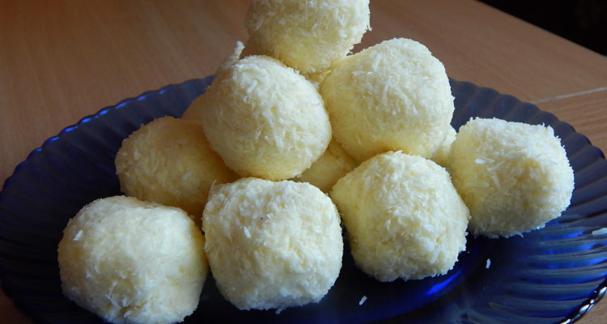

Raffaello Balls

Homemade Raffaello balls that look like the "real" one.
Ingredients
- 20 dkg shreds of coconut
- 27 dkg milk powder
- 20 dkg margarine
- 30 dkg of sugar
- 1.5 dl of water
- 10 dkg hazelnuts / almond (optional)
Steps
- Syrup is made from sugar and water and cooled.
- The coconut is mixed with the milk powder.
- The cooled syrup is mixed with the margarine and then the coconut milk powder is added. Let rest in the refrigerator for 1 hour.
- Then we form balls from the mass, in the middle of which we can put 1-1 grains of hazelnuts or almond, but we don't have to, they are very delicious without it.
- Finally, we turn the balls into coconut.